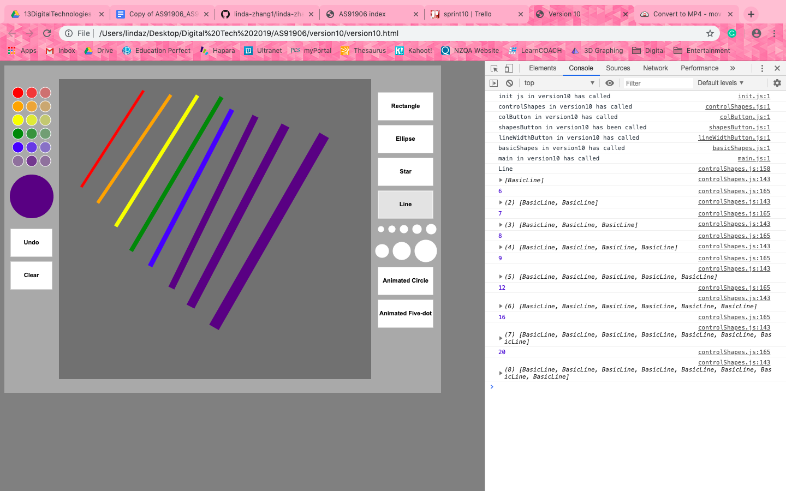

The overall vision is to make a web-based drawing application, allowing the user to draw and create shapes and lines and to manage colours.
This section covers the basic set up concepts and code needed for the program for it to function and be developed later on.
This program will be developed in the structure of multiple sprints. Each sprint will have its own Trello board (a web-based list-making application which I will use to plan each sprint) and will result in a new version of the program, which is saved in a new folder with new files. This way, progress can be saved in case of human error.
Inside each new version folder, there will be an HTML file that is the web page of the application. The rest of the files will be javascript files. The HTML file contains default code for the styling of the web page and links to other files. init.js is an identical file in every version folder which contains the default code for the canvas (where the program will be situated) and the colour palette (nine chosen rgba colours to be used for the program). main.js is another file in every folder that is used to instantiate objects. There will be other javascript files which contain code for classes for an object which are instantiated in main.js.
The canvas is the environment in which the program will run in. It is 800px by 600px.
colArray stands for ‘colour array’. It is a variable used to store all the chosen colours in the colour palette inside an array so I do not need to hard-code colours repetitively. Colours use the RGBA format, with transparency 0, 0.33, and 0.67 for each colour. More colours may be added in later versions.
The final program (and the previous versions) will be uploaded to GitHub and the folder will have an HTML file named index. This file will contain links for all the versions and have comments about the different versions. It will explain the changes and improvements made to the new version.
Sprint 1 aims to make the mouse draw a rectangle on the canvas.
This enables interactions between the user and the canvas.
When the mouse drags across the canvas, a rectangle with low transparency will be drawn.
When the mouse is released, the rectangle is drawn.
Multiple rectangles can be drawn this way, while the previous rectangles remain drawn.
Sprint 1 aims to be completed in 3 days.
Here is my trello board:
As it can be seen on the console log on the right, all attached js files have been called. It has also registered that there have been two mouse downs (one which has a longer duration between mouse down and mouse up). When the mouse clicks outside the canvas, the console log does not register that that location is the start of the rectangle. When the mouse is clicked inside the canvas, the console log shows that a basic rectangle could be drawn (it knows the coordinates of the mouse start values).
This time, as the mouse drags inside the canvas, an outline of the drawing rectangle follows the mouse. The mouse has not been released yet.
Once the mouse is released, the rectangle is drawn.
The mouse is unable to draw outside of the canvas. This drawing rectangle is an example of the furthest it can draw.
Multiple rectangles can be drawn and they all stay on the canvas.
Sprint 1 is complete. End of version 1.
28 March - 1 April. Sprint 1 was completed in 4 days.
This sprint aims to create a new drawing environment "canvas" inside the initial canvas.
This will actually be a rectangle. The interaction with the mouse to draw rectangles is set to be in this new
drawing canvas boundary. Nothing can be drawn outside this new canvas.
This leaves space for other actions the user can do later on in future sprints (eg click buttons or drag a bar).
Sprint 2 aims to be completed in 3 days.
Here is my trello board:
The attached js files have been called. There is a large rectangle inside the canvas. This is the new drawing “canvas”. This will be the new bounds for the dragging rectangles.
As the mouse drags, the rectangle is filled as well as the outline inside the new drawing “canvas”.
When the mouse starts drawing inside the boundary but drags outside, the temporary rectangle disappears.
If the mouse starts drawing outside the boundary, the dragging rectangle will not appear at all.
The dragging rectangle is only able to be drawn (and stay on the canvas) if it is bounds of the new drawing rectangle “canvas”.
Sprint 2 is complete. End of version 2.
1 April - 3 April. Sprint 2 was completed in 2 days.
This sprint aims to create buttons outside the new drawing "canvas" to enable the dragged rectangle to change to the chosen colour.
Each button will be assigned a colour. Once a particular button is clicked,
the next rectangle drawn on the new drawing canvas will be that colour.
Sprint 3 aims to be completed in a week.
Here is my trello board:
The attached js files have been called. The rectangle drawing “canvas” has been moved slightly to the right to fit space for the colour buttons. There are 6 colour buttons on the left of the canvas.
If no button is clicked before the mouse drags a rectangle, it will be the default colour (transparent white).
Buttons clicked before dragging and drawing a rectangle will make the next rectangle change colour.
As the new rectangle drags, the new fill colour can be seen. As the mouse is released,
the filled colour stays on the screen. If more than one button is clicked before drawing anything,
the last button that was clicked will be the set colour.
Sprint 3 is complete. End of version 3.
3 April - 9 April. Sprint 3 was completed in 6 days.
This sprint aims to draw an ellipse with the mouse, similar to the dragged rectangle.
It will be in the same boundary of the rectangle drawing canvas. Ideally, this action could use a button,
where the user can choose between drawing a rectangle or an ellipse.
The drawing ellipse could be drawn inside an outline of a rectangle to start with,
where the appearance of the rectangle could be removed after the ellipse has been finalised.
Sprint 4 aims to be completed in two weeks.
Here is my Trello Board:

The attached js files have been called. Two new buttons on the right have texts “Rectangle” and “Ellipse” to represent the shapes that the mouse will draw once one of these buttons are clicked.
If no shape button is clicked, the default shape that the mouse draws is a rectangle. (The default colour is a transparent white as no colour button is clicked either.) (The test bounds in Sprint 2 can still be applied.)
Once the rectangle button is clicked, a rectangle is drawn.

Once the ellipse button is clicked, an ellipse is drawn.
The various colour buttons can still be applied to both shapes.
Sprint 4 is complete. End of version 4.
9 April - 20 April. Sprint 4 was completed in 11 days (1 week and 4 days)
This sprint aims to add more buttons to the shape buttons (buttons on the right)
to enable variety in the available shapes the user could select.
Once the button for the shape is clicked, the user will be able to drag that shape on the drawing canvas,
just like the rectangle and ellipse. Possible shapes could be a star and a straight line.
Sprint 5 aims to be completed in two weeks.
Here is my Trello Board:
The attached js files have been called. Two new buttons on the right have texts “Star” and “Line” to represent the star and the straight line that the mouse will draw once one of these buttons are clicked. All the tests for bounds and default shape and colour can still be applied (refer to testing for sprint 4).
When the Star button is clicked, the mouse draws a star. (There is one slight problem: When the diameter of the star is in the rectangle canvas bounds, the shape itself may not. This forces the some part of the star out of bounds when the star is drawn close to the boundary. Refer to video below.)
When the Line button is clicked, the mouse draws a straight line.
The various colour buttons can still be applied to all shapes.
Sprint 5 is complete. End of version 5.
20 April - 3 May. Sprint 5 was completed in 20 days (2 weeks and 6 days).
This sprint aims to add animated elements to the drawing application.
New shapes such as a circle that grows and shrinks, or a “five-dot” shape which rotates
(a square with circles as corners and at the centre). When the mouse drags, the shape is stationary in its default position.
When the mouse releases, the shape will be animated (grow and shrink or rotate).
Sprint 6 aims to be completed in 2 weeks.
Here is my trello board:

The attached js files have been called. Two new buttons on the right have texts “Animated Circle” and “Animated Five-dot” to represent the growing circle and the rotaing five-dot object that the mouse will draw once one of these buttons are clicked. All the tests for bounds and default shape and colour can still be applied (refer to testing for sprint 4).
As the mouse drags the Animated Circle, it remains a stationary regular cicle (without animation), but when the mouse releases, the animation begins. Various sizes can be made inside the rectangle drawing canvas.
As the mouse drags the Animated Five-dot, it remains a stationary five-dot (without animation), but when the mouse releases, the animation begins. Various sizes can be made inside the rectangle drawing canvas.
The various colour buttons can still be applied to all shapes.
Sprint 6 is complete. End of version 6.
3 May - 14 May. Sprint 6 was completed in 11 days (1 weeks and 4 days).
Sprint 7 aims to alter the colour palette to have variations of every colour of the rainbow (this includes transparency).
The colour buttons could also be altered to fit the canvas to look like swatches. The colour buttons can be changed to be
circular in shape.
Sprint 7 aims to be completed in 1 week.
Here is my Trello board:
The attached js files have been called. Everything is the same as before, except there is a new colour palette on the left of the canvas. There are three columns, each with the different amount of transparency.
The various colour buttons can still be applied to all shapes.
Sprint 7 is complete. End of version 7.
16 May - 20 May. Sprint 7 was completed in 4 days.
Sprint 8 aims to make two more buttons: an 'undo' button and 'clear' button.
These two buttons will enable the user to undo the last shape they drew,
or clear the rectangle drawing canvas completely. Also, the rectangle drawing canvas boundary needs to be 'clipped'
so when the star and circles are drawn, the shape can stay in bounds (when the diameter does not exceed the boundary
but the shape does)(refer to problem in sprint 5).
Sprint aims to be completed in 2 days.
Here is my trello board:

The attached js files have been called. Everything is the same as before, except there are two new buttons labelled "undo" and "clear" on the left of the canvas. There are three columns, each with the different amount of transparency.
When various objects have been drawn, the undo button enables the last object to be removed from the rectangle drawing canvas.
The clear button enables all the objects on the rectangle drawing canvas to be removed. Basically, the array objectSet is either
completely cleared or the last object is removed from the array.
Sprint 8 is complete. End of version 7.
23 May - 27 May. Sprint 8 was completed in 4 days.
This sprint aims to create a "selected colour indication" swatch underneath the colour palette to show more obviously
what colour is selected (since the "over" colour is different from how the selected colour appears). This will be a basic circle
placed between the colour palette and the undo button. It wil change colour depending on which colour button is selected.
Sprint 9 aims to be completed in 2 days.
Here is my trello board:

The attached js files have been called. Everything is the same as before, except there is a "swatch indication" underneath the colour palette. This is made to change colour as the various colours are clicked so it is clear to the user what the selected colour looks like on screen.
When the mouse clicks the colours, the swatch changes to that colour. Various shape buttons can still be applied
to all colours.
Sprint 9 is complete. End of version 9.
27 May - 28 May. Sprint 9 was completed in 1 day.
This sprint aims to include the option of changing the line width of the "Line" button when it is drawn.
Currently, the default line width is 5px. I want create a set of buttons that will allow the line width to be altered.
They could be 5px, 10px, 20px... etc. Also, since main.js is filling up with repeated code, consider using loops.
Sprint 10 aims to be completed in 1 week.
Here is my Trello board:

The attached js files have been called (a new file, lineWidthButton.js has been called). Everything is the same as before, except there is a new set of buttons. These buttons control the line width of the "Line" button when it is clicked and dragged. (main.js has been altered to contain loops so the code for instantiations look nicer. It does not affect the function of the program).
When the "line" button is clicked and a line width button is selected, the line drawn will have the same line width as the radius of the line width button. Colour buttons can still be applied to these.
Various colour and shape buttons remian unaffected by the line width buttons. The new buttons only apply
to the "Line" button.
Sprint 10 is complete. End of version 10.
30 May - 9 June. Sprint 10 was completed in 10 days (1 week and 3 days).
This is the final sprint. All console logs are removed after testing.
The program is designed so new features can be added easily and old ones can be removed. This is addressed by the program elements. The colours, buttons and shapes have all been programmed as objects. This means that each object is a self-contained modular piece of code that takes a defined set of parameters to work. Many of them just take basic mouse data and colour information. All objects are built to a similar structure and compolsorily contain an update function which means they can appear on the interface using the update call. The management of most of the objects happens in a central place (control shape). The idea is an experienced programmer could easily remove elements or add new features. Comments are also precise and informative.
The program is free of bugs, loads quickly and works on different browsers. We have addressed this by having the program in (almost) pure javascript and has no graphics, so loads very quickly. I have tested this by using a live web server to store my versions, and have observed loading performance. To ensure the program works well, I have sysematically tested it. I have tested user interactions, position of clicking and direction of dragging. This has included careful checks around boundaries. The use of the Math.abs function was discovered after testing failures drawing the circular shapes (because these objects were being given negative radius values). Any new components were tested prior to being added to the main program. At various stages in sprints console.log was used to analyse boundary test functions and to locate problems when bugs appeared.
I was trialling the animated shapes when I rejected the idea of having the objects animated as soon as the mouse is down. It did not seem practical to have animated elemets in the control shapes and did not look very nice when the mouse only dragged a little bit. It was also hard to tell whether the animated object was in bounds or not (during the dragging, before the release of the mouse) because the object was constantly moving. It made more sense to drag the object without animation and the make it animate when the mouse releases.
I effectively used information from testing and trialling to improve the functionailty to the outcome. The interface was designed so that it was easy to use, and the colour indication was made to make the selected colour more obvious. I found a solution where objects draw outside of the drawing area (inspite of having the boundary inside parameters). This lead to the use of the clip function.
It allowed planning and development to happen together. It created repeated cycles of the plan to develop to test planning structure. After two or three sprints I got a much clearer idea of what I could achieve and my aims became much more focused and realistic. It helped to see the project in a highly simplified form at the start (potentially shippable product).